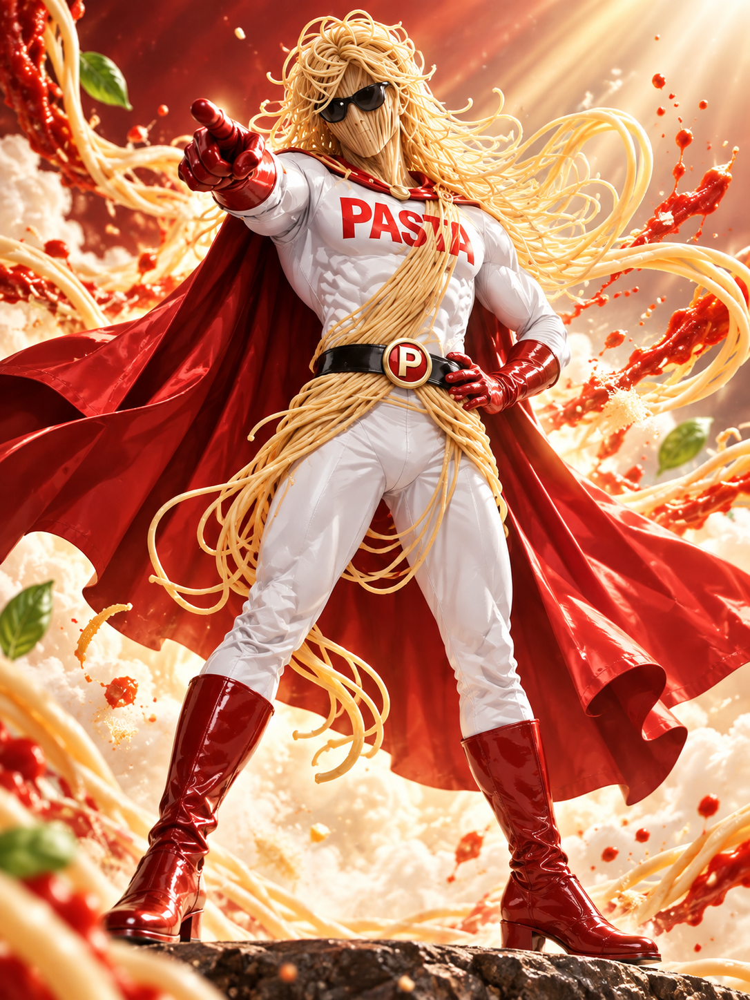
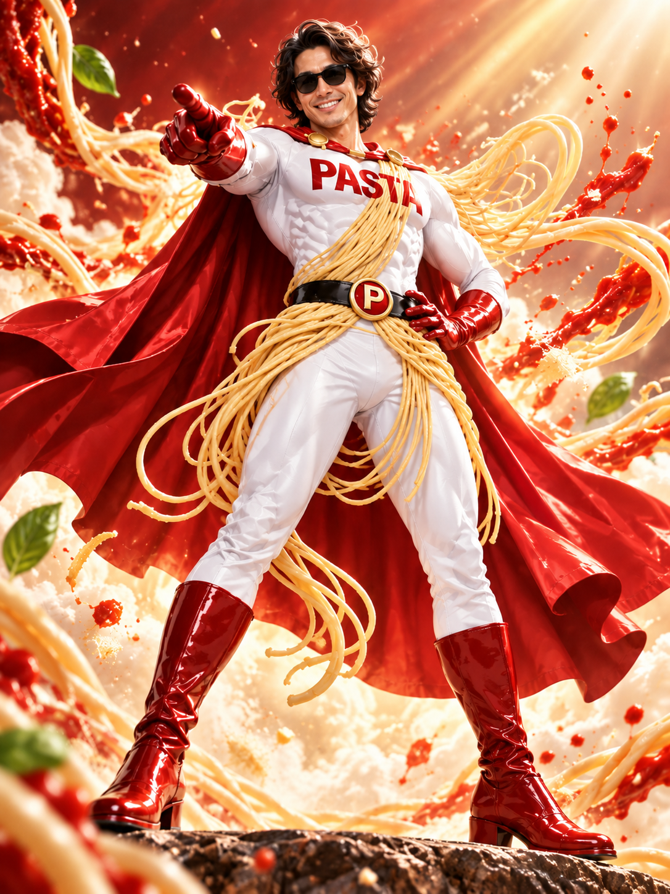
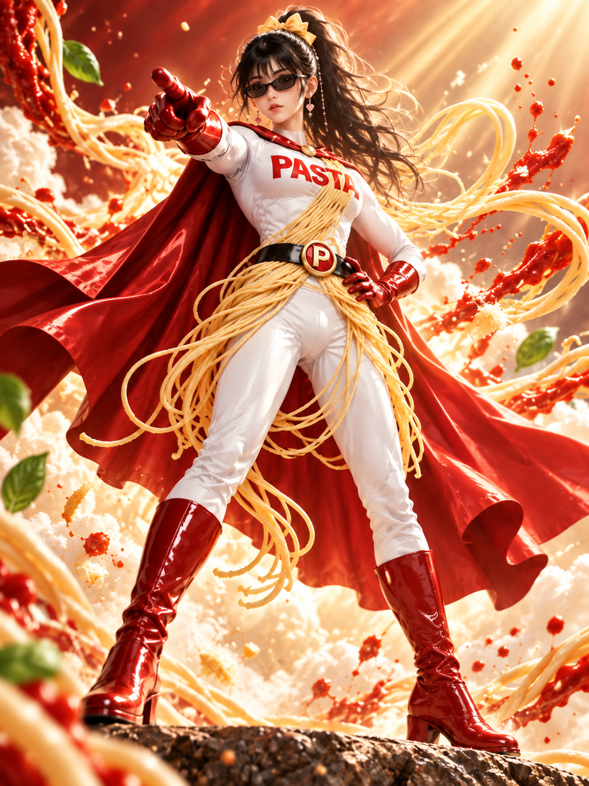
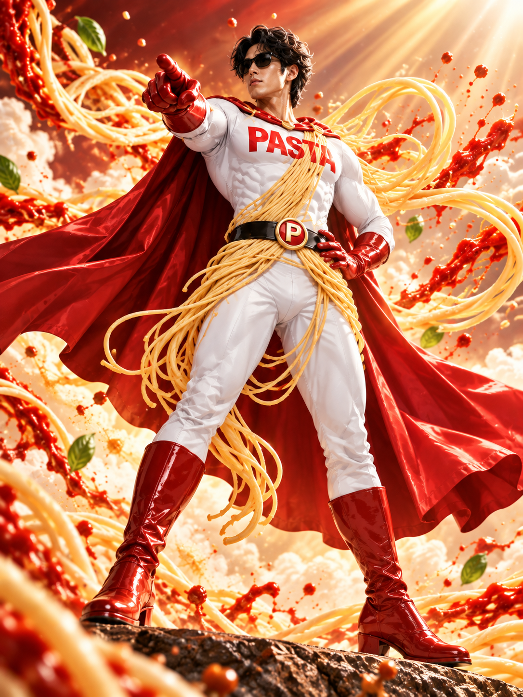
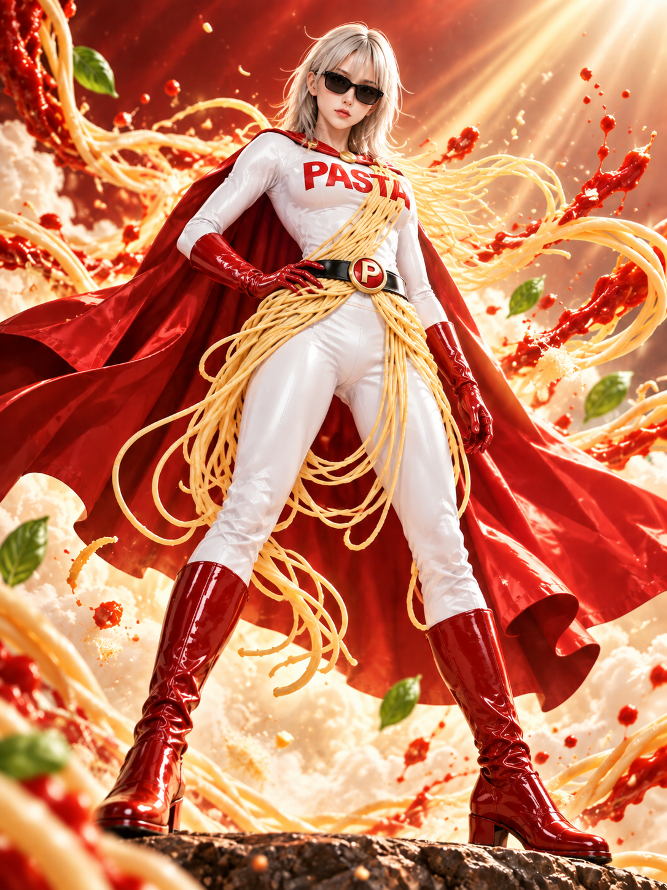

Logo Pack
ロゴPNG・透過素材
主役はパスタマン。今いちばん見てほしいコンテンツを大きく紹介する“本日のおすすめ”枠です。

パスタマンのイベントで投稿してくれた作品を、種類別に整理して紹介します。Xの投稿URLを追加していく前提の構成です。
主題歌やパスタマン関連曲をここで再生。今は1曲分のプレイヤーを用意し、音源アップ後に差し替えできます。
ネタ動画、ショート、格ゲー風、パスタマンらしい変な映像はこちら。Piazza Pastaと連動して追加できます。
イラスト、写真、ファンアート、公式ビジュアルを料理雑誌のような余白で展示します。




配布素材は、利用規約への同意後にダウンロードボタンを表示します。規約バージョン更新時は再同意させる設計です。
ロゴPNG・透過素材
パスタマン立ち絵・ビジュアル素材
投稿・イベント用のSNS素材